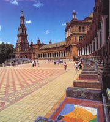
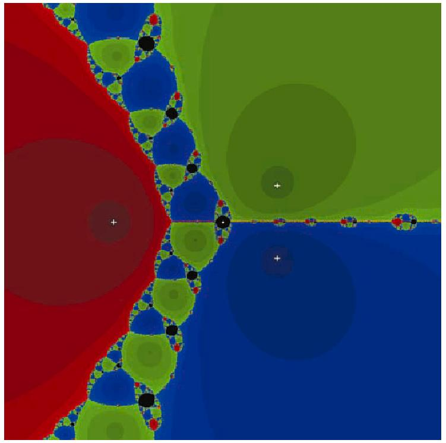

Striking recent advances in real algebraic geometry and arithmetic geometry reveal a deep connection between quantitative results over the real numbers and p-adic numbers. For instance, Khovanski's Theory of Fewnomials (from the late 1970's) gives bounds on the number of real solutions of sparse multivariate polynomial equations which are independent of the degree, and an even sharper analogous bound over arbitrary p-adic fields and number fields was proved by Rojas in 2001.
Since real algebraic geometry is central in applications in numerous areas of science and engineering, and since p-adic analysis is central in numerous areas within cryptography and computational number theory, a unified treatment would greatly benefit and unify many disparate groups of researchers and applied scientists.
The two primary goals of this special session are (a) to present the latest algorithmic, quantitative, and/or structural results from real and p-adic analytic geometry, and (b) to unify the researchers involved in these and other adjacent fields and to provide an ``incubator'' for future collaboration and growth.
Please check /~rojas/seville.html for further details...